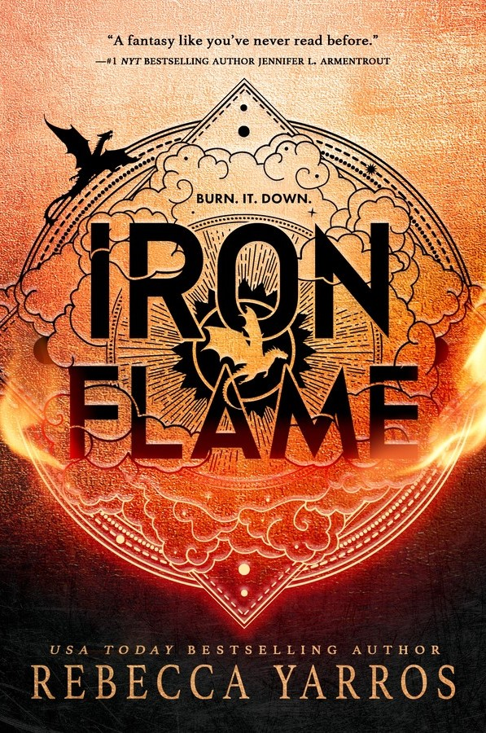
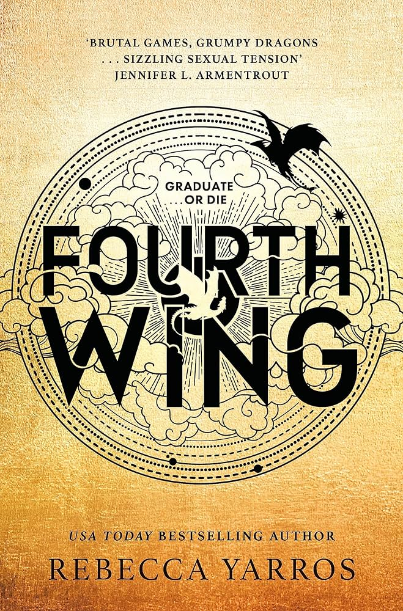
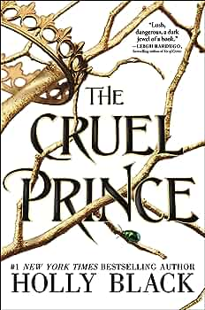
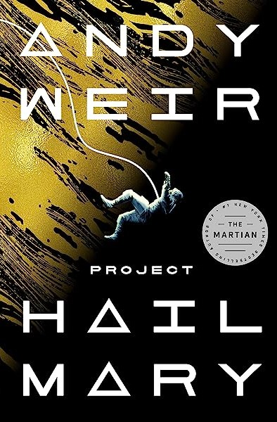
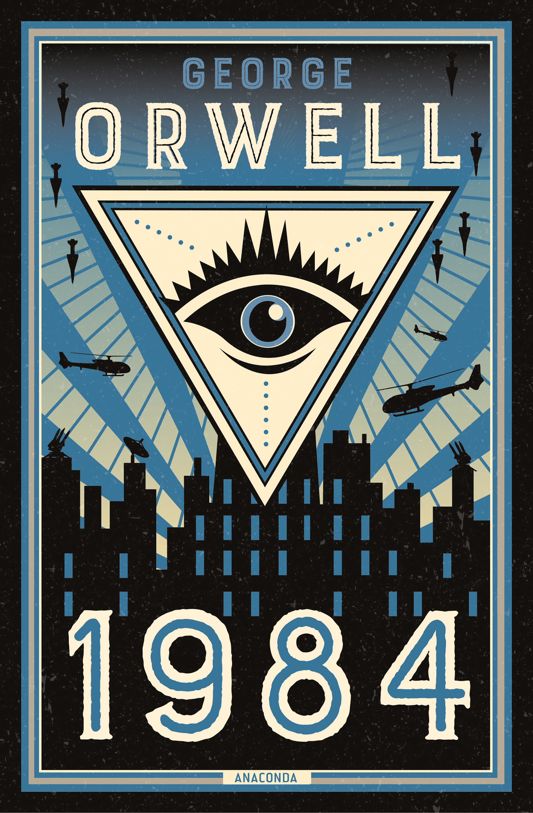
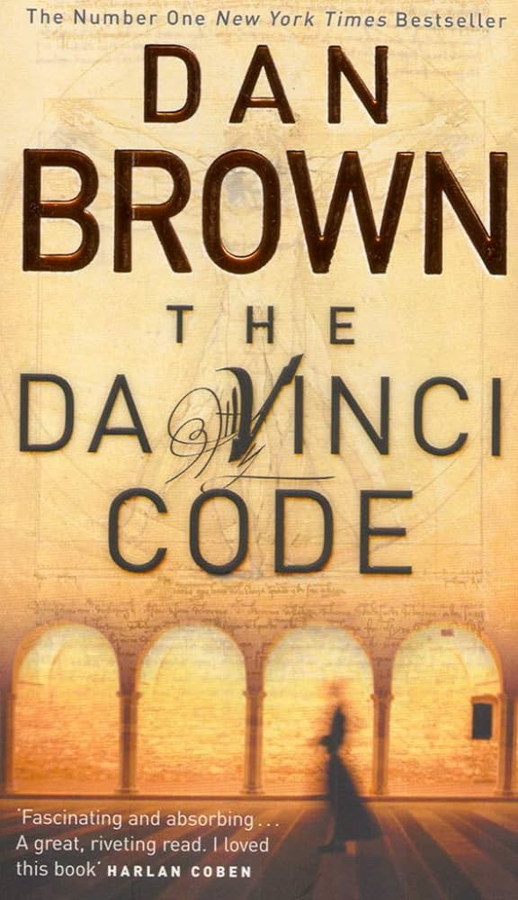

Die Fortsetzung zu "Fourth Wing"
“A dragon without its rider is a tragedy. A rider without their
dragon is dead.”
Violet wird befohlen sich den hunderten von Anwärtern anzuschließen,
die darum kämpfen, zu den Eliten von Navarre zu gehören: den
Drachenreitern. Doch mit jedem vergehenden Tag wird der Krieg
draußen tödlicher, die Schutzwälle des Königreichs versagen, und die
Todeszahl steigt weiter an. Außerdem beginnt Violet zu vermuten,
dass die Führung ein wichtiges Geheimnis verbirgt.
Absolut fesselndes Buch, klare Empfehlung für alle
Fantasy-Fans!

"On Earth We're Briefly Gorgeous" ist ein Brief eines Sohnes an eine
Mutter, die nicht lesen kann. Der Brief dient als Einblick in Teile
seines Lebens und in die Geschichte seiner Familie, vor seiner
Geburt, in Vietnam. Es beschäftigt sich zugleich mit komplexen
Themen, wie Rasse, Klasse und Männlichkeit, aber beleuchtet auch
schwere emotionale Themen inmitten von Sucht und Trauma.
Herzergreifendes Buch, aber durch Voungs teilweise poetischen
Ausdruck ist es schwer der Handlung bzw seinen Emotionen zu folgen
und es zu verstehen.
Mit erst sieben Jahren musste Jude mitansehen, wie ihre Eltern vor
ihren Augen brutal ermordet wurden. Der Mörder nahm sie und ihre
Schwestern mit zum Hohen Gericht der Feen, um dort als eine von
ihnen aufzuwachsen. Doch in den letzten zehn Jahren hat sich Jude
als Sterbliche nie dazugehörig gefühlt. Als Verrat das Hohe Gericht
erreicht, muss Jude herausfinden, wozu sie fähig ist, um die Macht
zu erlangen, nach der sie sich so sehnt.
Noch ein Fantasy-Klassiker, die Trilogie war durchgehend spannend
und hat Spaß gemacht zu lesen.

Ryland Grace ist der einzige Überlebende einer verzweifelten,
letzten Chance Mission – und sollte er scheitern, wird die
Menschheit und die Erde selbst untergehen. Mit seinen
Crewmitgliedern tot und seine Erinnerungen verschwommen
zurückkehrend, erkennt Ryland, dass ihn eine unmögliche Aufgabe
erwartet. Auf diesem winzigen Raumschiff durch den Weltraum rasend,
liegt es an ihm, ein unmögliches wissenschaftliches Rätsel zu lösen
und eine bedrohliche Gefahr für unsere Spezies zu überwinden.
Das Buch hat meine Liebe für Sci-Fi wieder erweckt und war so
humorvoll, aber auch spannend geschrieben. Loved it!

"Krieg ist Freiheit. Freiheit ist Sklaverei. Ignoranz ist Stärke"
Die Geschichte erzählt von einem Mannes, der eine verbotene
Liebesaffäre in einer von Kriegen beherrschten Welt und einer
Machthierarchie verfolgt, die nicht nur Informationen, sondern auch
individuelle Gedanken und Erinnerungen kontrolliert. "1984" ist eine
prophetische und beklemmende Erzählung, die die schlimmsten
vorstellbaren Verbrechen aufdeckt – die Zerstörung von Wahrheit,
Freiheit und Individualität.
Erschreckendes, aber augenöffnendes Buch zugleich.

Seit Nesta gegen ihren Willen zur High Fae wurde, kämpft sie darum,
einen Platz für sich in der seltsamen, gefährlichen Welt zu finden,
die sie bewohnt. Schlimmer noch, sie kann die Schrecken des Krieges
mit Hybern und all das, was sie dabei verloren hat, nicht hinter
sich lassen. Vor dem Hintergrund einer von Krieg verbrannten Welt,
die von Unsicherheit geplagt ist, kämpfen Nesta und Cassian gegen
Monster von innen und außen, während sie nach Akzeptanz und Heilung
in den Armen des anderen suchen.
Das letzte Buch und damit der
krönende Abschluss der 5-teiligen Fantasy-Reihe
In Paris untersucht der Harvard-Symbologe Robert Langdon einen
nächtlichen Mord am Louvre-Kurator. Gemeinsam mit der Kryptologin
Sophie Neveu entdeckt er in Leonardo da Vincis Werken Hinweise auf
ein explosives historisches Geheimnis. Der getötete Kurator gehörte
dem Priorat von Zion an, einer Geheimgesellschaft mit Mitgliedern
wie Isaac Newton und Victor Hugo. Langdon und Neveu müssen das
Rätsel lösen und einem mysteriösen Verfolger entkommen, um die alte
Wahrheit zu bewahren.
Es war faszinierend etwas über den Symbolismus hinter Da Vinics
Gemälden zu erfahren sowie die Gemeinsamkeiten zwischen modernem
Christentum und alten heidnischen Religionen.

{kind=link}
{kind=link}
{kind=link}
{kind=link}
{kind=link}
{kind=link}